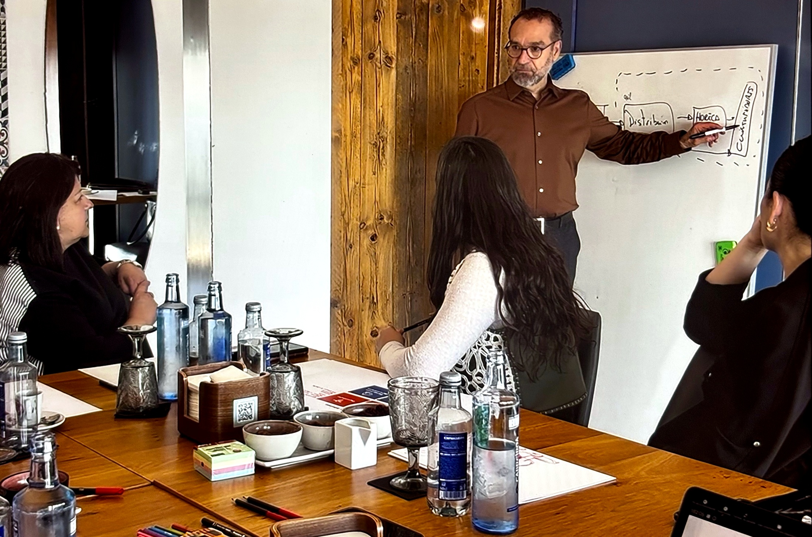
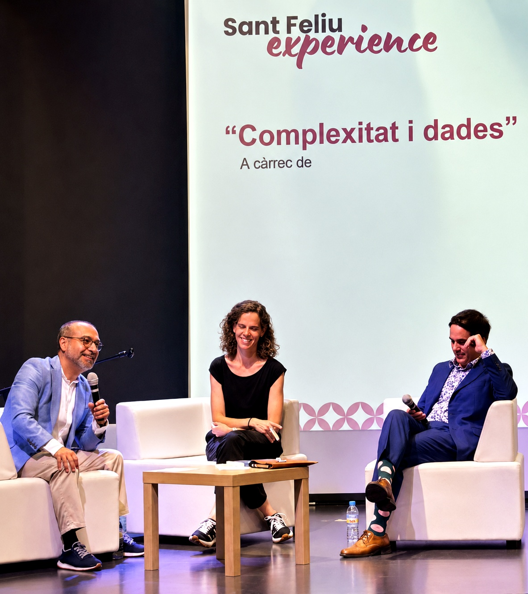

Ideas para comprender lo que cambia antes de quedarse atrás.
Marcelo Lasagna traduce la complejidad en ideas, preguntas y criterios que ayudan a líderes y organizaciones a reconocer señales, cuestionar inercias y abrir nuevas posibilidades de acción.
Marcelo convierte ideas complejas en un lenguaje accesible y exigente que permite nombrar lo que se percibe, revisar supuestos y abrir mejores conversaciones.
La audiencia se lleva una mirada nueva, un lenguaje compartido y preguntas capaces de orientar la acción.
02 · Tres formatos
01 · Conferencias
Una idea que cambia la conversación.
Intervenciones para congresos, convenciones, encuentros corporativos y jornadas institucionales. Marcelo presenta una tesis clara y provocadora, conectada con el contexto de la audiencia.
Audiencias amplias · 45–75 minutos · Conferencia y conversación final.
Espacios de profundización para equipos directivos y profesionales. Combinan exposición, conversación y trabajo aplicado para explorar cómo una idea afecta a la realidad del grupo.
Equipos y grupos especializados · 2–4 horas · Exposición, diálogo y aplicación.
Una pregunta real. Una conversación que abre posibilidades.
Una sesión con Marcelo Lasagna alrededor de una tensión, una decisión o un desafío concreto de la organización. No parte de una ponencia estándar, sino de aquello que el grupo necesita comprender mejor.
Antes de la sesión se identifica la cuestión. Marcelo aporta marcos, preguntas y provocaciones para ampliar la comprensión y explorar movimientos que antes no estaban disponibles.

90–180 minutos · Equipos directivos, consejos y grupos reducidos.
El objetivo no es salir con una respuesta prefabricada, sino formular mejor el problema y ampliar las posibilidades de acción.
Las organizaciones rara vez colapsan de repente. Mucho antes empiezan a perder capacidad para percibir lo que cambia, aprender con suficiente velocidad y coordinar una respuesta.
Basada en el libro de Marcelo Lasagna, esta conferencia muestra por qué el éxito puede convertirse en rigidez y qué diferencia a las organizaciones que conservan su vigencia.
Por qué una organización extraordinariamente eficiente puede volverse vulnerable cuando el entorno deja de parecerse al mundo para el que fue diseñada.
Del ajedrez al Go
Cómo dirigir cuando el tablero, las reglas y los movimientos posibles cambian durante la partida.
Inteligencia adaptativa
Cómo desarrollar la capacidad colectiva de percibir, comprender, decidir, aprender y evolucionar en contextos complejos.
Cada intervención puede adaptarse al contexto, el sector y el propósito del encuentro.
04 · Perfil
Pensamiento y experiencia.
Marcelo Lasagna es fundador de Protea y autor de ¿Por qué colapsan las organizaciones?. Su trabajo conecta ciencias de la complejidad, estrategia, innovación y aprendizaje organizacional para comprender cómo las organizaciones pueden conservar su vigencia en entornos que cambian.

05 · Contratación
ContextoQué organizáis
EncajeFormato + fecha
PropuestaContenido + condiciones
PreparaciónAlineación previa
Consultar disponibilidad de Marcelo
Cuéntanos brevemente qué estás organizando. Revisaremos el contexto para confirmar el formato y la disponibilidad.